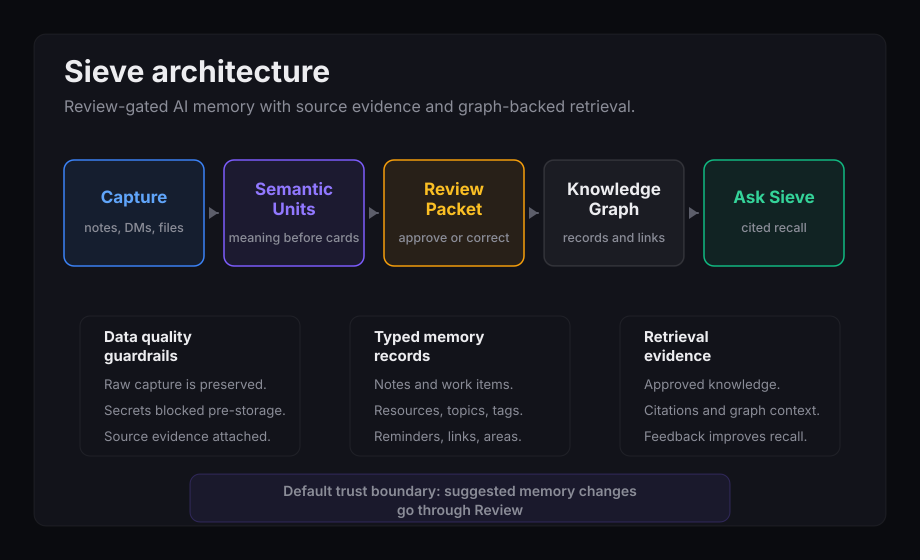

What Sieve does
Sieve is an AI memory workspace that captures rough thoughts, Discord messages, files, links, and conversations, then turns them into reviewable memory records with source evidence intact.
Active Product
AI knowledge and memory workspace
Sieve turns messy personal input into reviewable, searchable memory. Capture anything, ask Sieve what it knows, and review every proposed change before it becomes durable knowledge.

Sieve is an AI memory workspace that captures rough thoughts, Discord messages, files, links, and conversations, then turns them into reviewable memory records with source evidence intact.
The system combines a review-gated AI extraction pipeline, typed knowledge records, graph links, source provenance, generated API clients, and retrieval feedback so memory stays useful instead of becoming a pile of raw notes.
Case Study
Personal knowledge tools usually fail in one of two ways: they store raw dumps that are hard to reuse, or they let AI rewrite memory too aggressively. Sieve aims for the middle path: preserve the original capture, propose useful memory changes, and make the user approve what becomes durable.
Sieve uses a TypeScript web dashboard, a Node API service, an OpenAPI contract with generated clients, and Supabase/Postgres as the durable store. The AI layer enriches captures and retrieval, while the review workflow is the default safety boundary for memory mutation.
The public-safe model is category-level: captures, review packets, review candidates, approved knowledge nodes, work items, derived project views, source documents, source evidence, graph links, retrieval events, feedback, settings, export/delete controls, and Discord pairing. The public case study intentionally avoids raw endpoint catalogs, table definitions, and policy text.
I shaped the product language and implementation around Capture, Review Packet, Review Candidate, WorkItem, Knowledge Link, Source Evidence, and Ask Sieve so the UI, API, and data model share the same mental model.
Verification spans model tests for candidate policy, API and dashboard tests for review behavior, generated contract checks, typechecking, source-level route assertions, and browser QA where authentication gates allow it.
Public proof comes from architecture diagrams, schema/API category summaries, verification notes, safe screenshots or videos, and interview walkthroughs rather than public source code.
Media
This product demo shows the AI-native memory loop: capture, semantic ingestion, AI extraction, review packet approval, and source-grounded recall.
Demo with synthetic data.